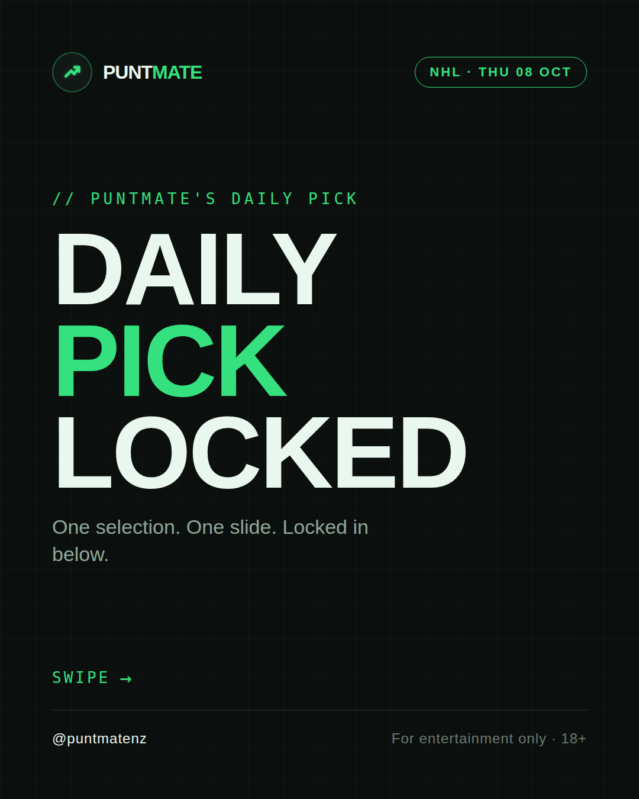
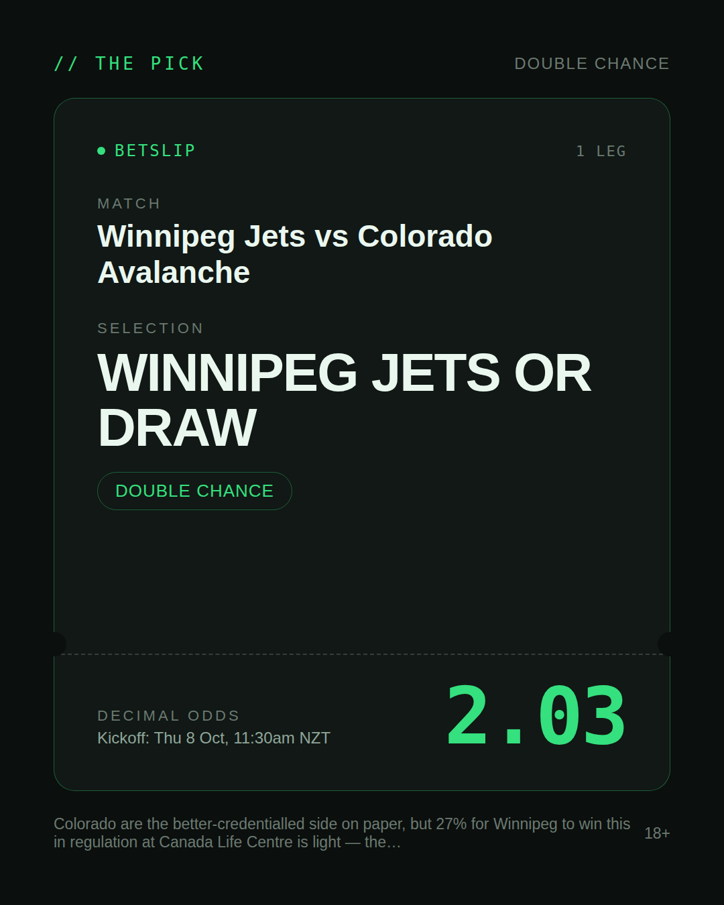
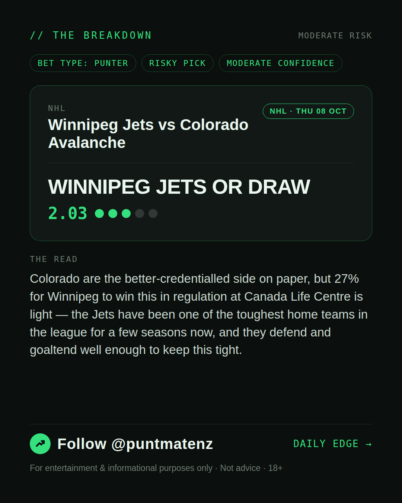
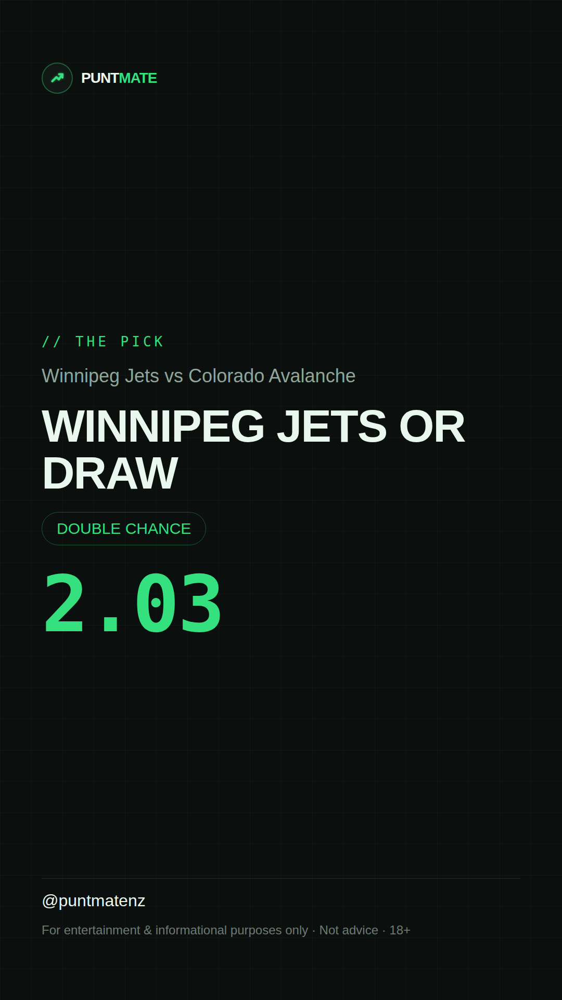

*🎯 PUNTMATE NZ — NHL* 🏟 Winnipeg Jets vs Colorado Avalanche *PICK:* WINNIPEG JETS OR DRAW *ODDS:* 2.03 (Double Chance) *BET TYPE: PUNTER* _Colorado are the better-credentialled side on paper, but 27% for Winnipeg to win this in regulation at Canada Life Centre is light — the Jets have been one of the toughest home teams in the league for a few seasons now, and they defend and goaltend well enough to keep this tight._ ────────────────── 📲 Join Telegram for daily picks ⚠️ For entertainment & informational purposes only. Not advice. 18+.
🎯 NHL — Winnipeg Jets vs Colorado Avalanche WINNIPEG JETS OR DRAW @ 2.03 (Double Chance) BET TYPE: PUNTER Solid touch here. Not a lock, but the value's real and the form backs it up. Colorado are the better-credentialled side on paper, but 27% for Winnipeg to win this in regulation at Canada Life Centre is light — the Jets have been one of the toughest home teams in the league for a few seasons now, and they defend and goaltend well enough to keep this tight. Follow for daily value picks → @puntmatenz ⚠️ For entertainment & informational purposes only. Not advice. 18+. #PuntmateNZ #SportsBetting #NZTAB #NHL
| has_pick | True |
| pick_id | 2026-10-07_Winnipeg_Jets_vs_Colorado_Avalanche_dryrun |
| run_id | 37600723279 |
| generated_at | 2026-10-07T09:29:41.892883+00:00 |
| post_date | 2026-10-07 |
| match | Winnipeg Jets vs Colorado Avalanche |
| sport | icehockey_nhl |
| sport_label | NHL |
| market | Double Chance |
| selection | WINNIPEG JETS OR DRAW |
| odds | 2.03 |
| bet_type | PUNTER_BET |
| bet_type_label | BET TYPE: PUNTER |
| bet_type_reason | Solid touch here. Not a lock, but the value's real and the form backs it up. Colorado are the better-credentialled side on paper, but 27% for Winnipeg to win this in regulation at Canada Life Centre is light — the Jets have been one of the toughest home teams in the league for a few seasons now, and they defend and goaltend well enough to keep this tight. |
| classification | RISKY_PICK |
| risk | RISKY_PICK |
| confidence | MODERATE |
| confidence_label | MODERATE |
| final_explanation | Colorado are the better-credentialled side on paper, but 27% for Winnipeg to win this in regulation at Canada Life Centre is light — the Jets have been one of the toughest home teams in the league for a few seasons now, and they defend and goaltend well enough to keep this tight. |
| public_caution | Keep this one light — the value's there but so is the uncertainty. |
| theme | night |
| carousel_paths | ['data/review/2026-10-07_Winnipeg_Jets_vs_Colorado_Avalanche_dryrun/cover.png', 'data/review/2026-10-07_Winnipeg_Jets_vs_Colorado_Avalanche_dryrun/tip.png', 'data/review/2026-10-07_Winnipeg_Jets_vs_Colorado_Avalanche_dryrun/breakdown.png'] |
| carousel_urls | ['https://raw.githubusercontent.com/kingofthecastle24/puntmate/main/data/cards/2026-10-07_Winnipeg_Jets_vs_Colorado_Avalanche_night_1_cover.png', 'https://raw.githubusercontent.com/kingofthecastle24/puntmate/main/data/cards/2026-10-07_Winnipeg_Jets_vs_Colorado_Avalanche_night_2_tip.png', 'https://raw.githubusercontent.com/kingofthecastle24/puntmate/main/data/cards/2026-10-07_Winnipeg_Jets_vs_Colorado_Avalanche_night_3_breakdown.png'] |
| story_path | data/review/2026-10-07_Winnipeg_Jets_vs_Colorado_Avalanche_dryrun/story.png |
| story_url | https://raw.githubusercontent.com/kingofthecastle24/puntmate/main/data/cards/2026-10-07_Winnipeg_Jets_vs_Colorado_Avalanche_night_story.png |
| intended_platforms | ['telegram', 'instagram_feed', 'instagram_story', 'facebook'] |
| workflow_state | GENERATED |
| has_punter_multi | False |
| has_gambler_multi | False |
| has_degenerate_multi | False |